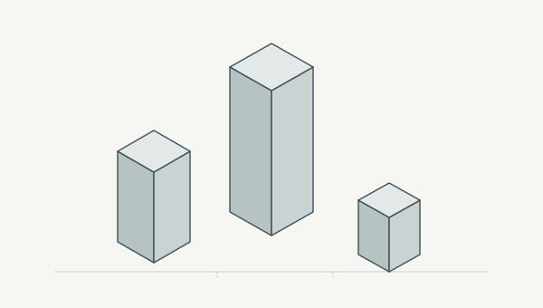
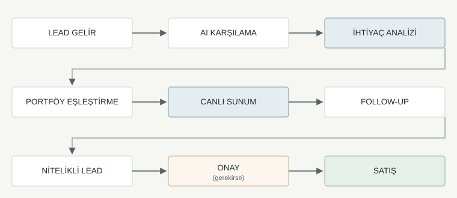
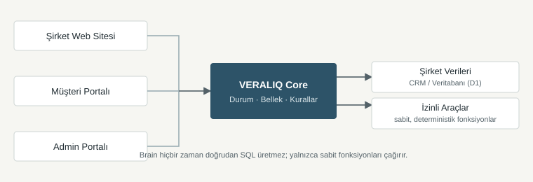
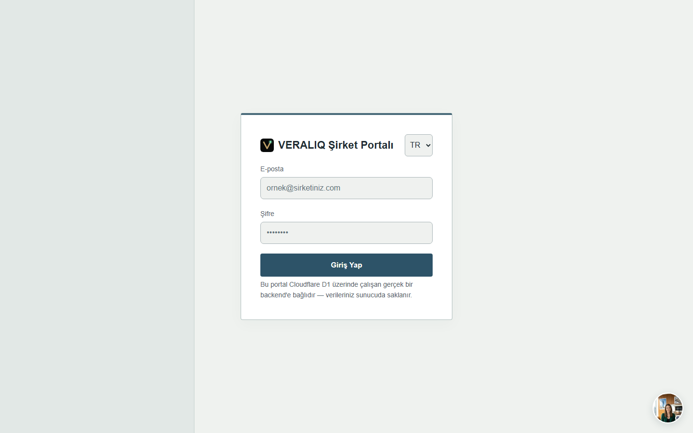
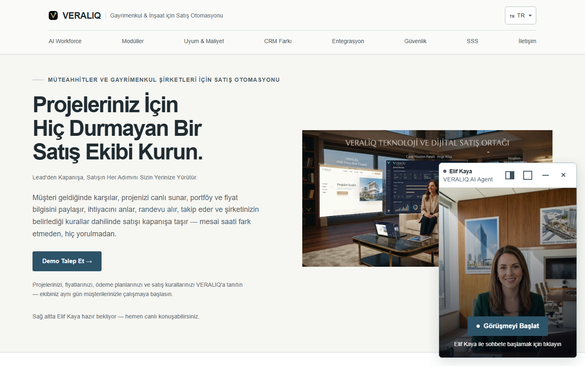

Lead'den kapanışa, satışın her adımını sizin yerinize yürütür.


Proje, fiyat ve stok verinizi VERALIQ'in kendi portalında yönetin — harici CRM bağlantısı yol haritamızda.

Agent mimarisi platform seviyesinde tasarlandı — kendi web sitenize, portalınıza veya mobil uygulamanıza ekleyin.

Gerçek zamanlı sesli konuşma; yazıya dökülü klasik chat deneyimi değil.

Her şirketin proje ve müşteri verisi ayrı tutulur; Agent yalnızca kendi şirketinizin verisiyle konuşur.
Admin, portal ve CRM erişimleri rol bazlı yetkilendirmeyle kontrol edilir.
Müşteri verisi açık rıza ile toplanır; KVKK kapsamındaki talepler değerlendirilir.
Konuşma ve işlem kayıtları zaman damgalı olarak tutulur, denetlenebilir.
| Ölçüt | Tanım |
|---|---|
| İlk yanıt süresi | Lead alınması ile ilk anlamlı yanıt arasındaki süre |
| Takip tamamlama | Tamamlanan planlı takip / planlanan takip |
| Randevu dönüşümü | Oluşturulan geçerli randevu / uygun lead |
| Randevuya katılım | Katılımı doğrulanan randevu / planlanan randevu |
| Operasyon zamanı | Aynı kapsam ve dönemde ölçülmüş iş yükü karşılaştırması |
Proje/portföy, fiyat ve stok verisinin aktarımı.
CRM veya dahili veritabanı (D1) entegrasyonu.
İzinli test ortamında Agent davranışının doğrulanması.
Şirketinizle birlikte tanımlanan kabul kriterlerinin kontrolü.
Projelerinizi, fiyatlarınızı, ödeme planlarınızı ve satış kurallarınızı VERALIQ'a tanıtın — kurulum süresi kapsamınıza göre birlikte planlanır (bkz. Slayt 11).
info@veraliq.com